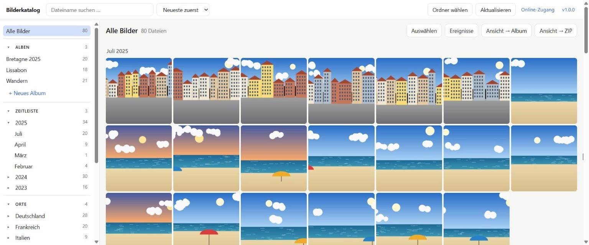
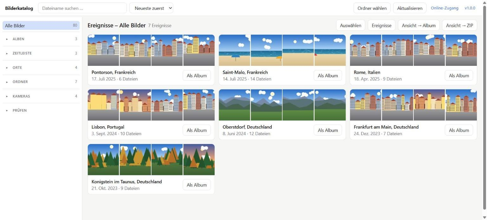
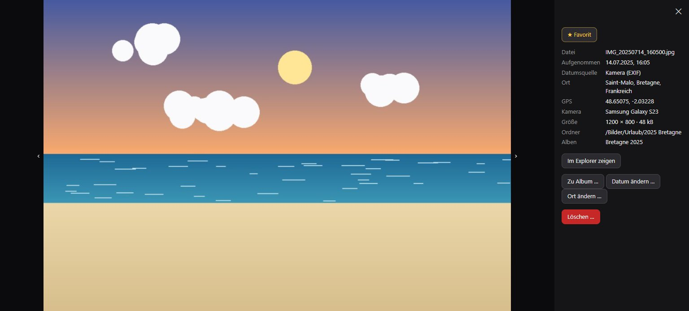

Nach Datum
Jahre und Monate mit Anzahl. Fehlt das Kameradatum, liest das Programm es aus dem Dateinamen, etwa bei Messenger-Bildern.
Für alle mit zu vielen Fotos
Der Bilderkatalog sortiert deine Bilder nach Datum, Ort und Kamera, stellt sie in Alben zusammen und packt sie als ZIP zum Weitergeben. Deine Ordner in OneDrive bleiben, wie sie sind.

Einmal einlesen, danach bleibt der Katalog auf dem Stand: „Aktualisieren“ liest nur noch neue und geänderte Bilder.
Alles, was du ordnest, steht nur im Katalog des Programms. Kein Bild wird verschoben, umbenannt oder verändert.
Jahre und Monate mit Anzahl. Fehlt das Kameradatum, liest das Programm es aus dem Dateinamen, etwa bei Messenger-Bildern.
Länder und Städte aus den GPS-Daten der Fotos – offline bestimmt, ohne dass Koordinaten das Haus verlassen.
Bilder frei zusammenstellen, ein Bild kann in mehreren Alben liegen. Ganze Ansichten mit einem Klick übernehmen.
Zusammengehörende Bilder – ein Ausflug, ein Urlaubstag – werden automatisch erkannt und lassen sich als Album speichern.
Auswahl, Album oder Ansicht als ZIP, wahlweise flach, nach Jahr/Monat oder in der Ordnerstruktur des Originals.
Bilder, die nur in der Cloud liegen, werden zum Einlesen nicht heruntergeladen. Vorschau und Ort lassen sich gezielt nachladen – der Speicher wird danach sofort wieder frei.
Welches Bild stammt vom Handy, welches von der Kamera? Filter je Modell.
Bilder ohne Aufnahmedatum, ohne GPS, Videos und Bilder, deren Details noch fehlen.
Auswahlmodus mit Klick und Shift-Klick, dazu Großansicht mit allen Angaben und „Im Explorer zeigen“.


Bilderkatalog-Setup-X.Y.Z.exe laden.Entwickler finden die Installation aus dem Quellcode (auch für macOS und Linux) in der README.
Im Programm oben rechts auf die Versionsnummer klicken, dann „Nach Updates suchen“. Die neue Version einfach über die alte installieren – Katalog und Alben bleiben erhalten.
%LOCALAPPDATA%\bilderkatalog.